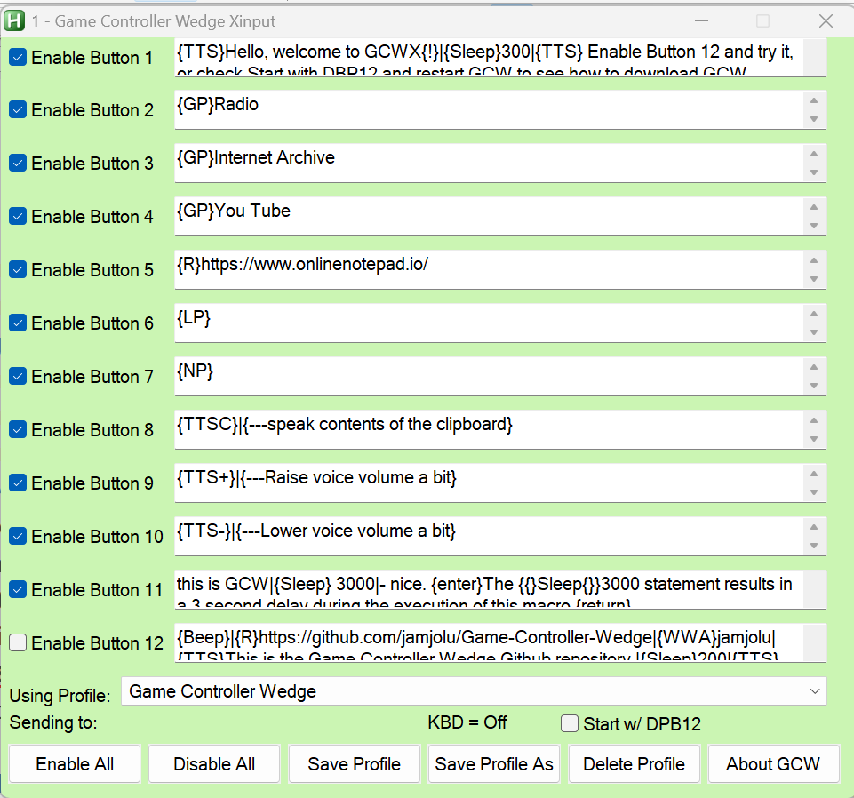
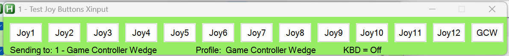

GCWX Help
Xinput Game Controller Wedge Description
By Jim Luther
https://github.com/jamjolu/Game-Controller-Wedge
GCWX is a version of GCW that works exclusively with Bluetooth
Xinput compliant game controllers that use Microsoft's Xinput API.
Most of the details in this document are otherwise the same as the
help page for GCW. See this for a more detailed
explanation about why GCWX is needed.
To use GCWX, connect to your Xinput
Bluetooth controller first, then run GCWX.ahk.
In this document GCW and GCWX refer to the same
thing, except where specifically referring to GCWX.
GCW is a tool for creating and executing macros
for Windows computers that are triggered by pressing game
controller buttons. It is very much like
Joy2Key or
XPadder, but it is simpler for
building more complex and capable macros without too much of a
learning curve. With GCW you type a macro into a text field, and
you are ready to try it.
With GCW you can compose up to 12 macros that you can save as a
“profile” that you name. You can create as many profiles as you
like.
Built-in commands allow you to run programs, open folders and
known file types, open web pages, toggle through open windows,
open active windows, and change profiles, click targets, and
more.
GCW is based on
Autohotkey
V1.1. The well known Autohotkey (AHK) scripting tool
offers means for emulating keyboard and mouse actions,
interacting with windows, and much more. It is frequently used
to automate repetitive computer tasks.
Table of Contents:
1.
GCWX /windows- an overview
2.
More about the GCWX
windows and useful Hotkeys
3.
Anatomy of a macro
4.
More macro examples
5.
GCWX Special Commands
6.
Combining
macros and commands
8.
Limitations/Contact
9.
How can I get GCWX?
GCWX Windows:
This is the main GCWX window where you define your macros, or
issue commands.

GCWX supports up to 12 macros you define which are triggered by
joystick or gamepad buttons 1 through 12.
GCWX only supports input from a game controller DPad
that map to game controller buttons 9 to 12 as shown here:
GCWX
buttons to Xinput Button Mapping Details
GCWX
Button 1 = XInput A
GCWX
Button 2 = XInput B
GCWX
Button 3 = XInput X
GCWX
Button 4 = XInput Y
GCWX
Button 5 = XInput Left Shoulder
GCWX
Button 6 = XInput Right Shoulder
GCWX
Button 7 = XInput Back
GCWX
Button 8 = XInput Start
GCWX
Button 9 = XInput DPad Up
GCWX
Button 10 = XInput DPad Right
GCWX
Button 11 = XInput DPad Down
GCWX
Button 12 = XInput DPad Left

This smaller Test Joy Buttons window lets you test your
macros/commands without a game controller. This window, when open,
sits on top of other windows.
Optionally, you can launch macros with single
key presses from the
keyboard (see more below.)
Why use game controller buttons to launch macros?
Because game controller buttons are unlikely to cause things to
happen in typical Windows applications - other than games.
More about the GCWX
Windows
- You can enable/disable any or all game controller buttons
for this profile using the Enable check boxes, or
the Enable/Disable All button.
- You can save changes you make with the Save Profile
button. Be sure to Save any changes you want to keep
before loading a new profile or exiting GCWX.
- You can create a new profile with the Save Profile As
button.
- You can remove an entire profile with the Delete
Profile button - except the default Game Controller
Wedge profile.
- You can select any profile from the Using Profile:
drop down menu, or via the {GP} Special
Command
- The Sending To: label (most times) shows
the title of the application window that will receive your
macros. Just which window GCW will send to depends on which
application was opened last, or which has the focus. If you
attempt to send something to a window that can't use the
sent macro, Windows will produce a chime sound, or, maybe
nothing will happen at all. So, if you expect something to
have happened that did not, suspect that the macro was sent
to the wrong window. GCW has
built-in commands you can use to activate a desired
window to minimize sending to a wrong window.
- The KBD = On (or Off) is a new feature that
optionally allows a keyboard to launch macros where keys 1 -
9, 0 are the same as Joy buttons 1 - 10, and the - (minus)
key is joy button 11, and the = (equal) key is button 12.
This feature may be convenient especially for wireless
keyboard users in classrooms settings, but may cause
confusion if you forget GCW in keyboard mode is active. The
keyboard access option can be turned on/off with the Ctrl-Alt-k
key combo. Whenever the keyboard mode changes you will hear
a status announcement. The keyboard mode is auto-saved and
will persist between GCW sessions.
- About GCWX opens this help file.
- The GCW button in the Test Joy Buttons window
brings the main GCW window into the foreground.
- The Start w/ DPB12 checkbox, if checked, runs the
macro defined in the Game Controller Wedge (default)
profile for Button 12 when GCW is launched. You can use this
feature to simplify setting up a starting environment. You
could also add a link to GCW in your Windows startup folder
so that GCW does this when you restart your Windows
computer. The Button 12 macro will be executed regardless of
the enable checkbox state.
- With GCWX the an Xinput Bluetooth game
controller always uses the DPad as some many Xinput
controllers don't have 12 buttons.
GCW Hotkeys do stuff:
- Ctrl-Alt-k = Turn keyboard mode on/off -
When on, this mode allows using keys 1 - 9, 0 to activate
Joy buttons 1 - 10, and allows the - key to activate joy
button 11, and the = key to activate button 12. You will
hear an announcement regarding the keyboard mode status if
you change it. Any keyboard mode change remains persistent
across GCW sessions.
- Alt-m = Show the current mouse cursor coordinates
in a tooltip. This also copies the coordinates into the
clipboard for convenient pasting into a macro.
- Ctrl-Alt-m = Close the tooltip message box.
- Ctrl-Alt-h = Show or Hide the GCW window and the
TJB window. If hidden, GCW remains active and will respond
to game controller interactions as well as keyboard
interactions if keyboard mode is on. Hiding the user
interfaces can help reduce screen clutter, and prevent
inadvertent interactions with GCW. Showing or hiding
GCW using the hotkey does not persist across sessions unless
you use the following hotkey sequence.
- Shift-Ctrl-Alt-h = Save the current hidden or
shown GCW windows status. Upon the next reopening of
GCW if the hidden status was saved, GCW will open, but it
will be hidden. Having GCW open in hidden mode may be
helpful once you have a well defined macro set for a user
who is not expected to edit GCW setups, but who will benefit
from GCW macros to simplify computer interactions. You
will hear an announcement as to hidden or shown status that
was saved, and if GCW is hidden when you reopen it you will
hear an announcement regarding the hidden status.
If you've hidden the GCWX windows, how can you close
the GCWX application?
You can just issue Ctrl-Alt-h and click the red X in
the main GCWX window This will have no effect on the next GCWX
restart.
Anatomy of a Macro
GCWX uses
AutoHotkey and requires that you adhere to
the AutoHotkey conventions for the
Send
command (at AHK site)
An Example:
^p{enter}
This example opens the print dialog using the Ctrl-p key combo in
many programs, followed by the Enter key which is a special
character. You can also use {return} for the Enter key
Pressing and holding the Control key for the key that follows is
denoted by the ^ character. Keys like Alt, Shift, Ctrl and the
Windows key are referred to as modifier keys.
Special characters like tab, space (at the end or beginning of a
macro), or backspace all need to be enclosed in braces as in:
{left}
for left arrow. Or,
{F11} for the F11 key.
See
more about including special characters in your macros here
at the AHK site.
Here is the list of modifier keys: (
More
about modifier keys here at the AHK site)
# = Windows
key
! =
Alt
^ =
Control
+ = Shift
You can combine modifiers as in:
^!{down} which reads as
Ctrl-Alt-(down arrow). This combo may turn your display upside
down on some Windows computers!
^!{up} can restore your
display.
More macro examples
With the exception of the {Sleep} command mentioned below,
all the examples on this page are carried out by the
AutoHotkey Send
command. In GCW the Send command does not require any
prefix.
A name and address fill in:
Fred{tab}Flintstone{tab}345
Cave Stone Rd.{tab}Bedrock{tab}NY{tab}12345{enter}
You can press a special character key multiple times by adding a
number to the special character:
{tab 3} (3 tabs).
GCW sends keys faster than you can type, so delays may help a
program to catch up to your macro, so a
{Sleep} command
described later in the document can provide a delay to allow the
computer to catch up to the macro in progress.
You can click at particular screen coordinates:
{click 150,
600}
You can hover the mouse cursor over particular screen
coordinates:
{click 150 600 0}
You can double-click at particular screen coordinates:
{click
150 600 2}
You
can do other {click… commands} as well as seen at the AHK
site.
To help you to determine your cursor position, GCW has a built-in
hotkey sequence:
Alt-m opens a tooltip note with the
coordinates. The coordinates are also copied to the clipboard. Use
Ctrl-Alt-m to hide the tooltip note.
Raise the volume a little bit:
{volume_up}
Select the browser back button:
{browser_back}
Again,
there is much more about what you can send can be found here
at the AHK site
Special Commands
In addition to the standard AHK special characters, GCW offers its
own special commands. These commands always start with the command
enclosed in braces like this:
{R}
Aliased AutoHotkey Commands:
{R} - invokes the AHK
Run
command. The {R} command can open websites, programs, known file
types and folders as long as you follow the {R} with a correct
file path, or URL. The file path or URL can be optionally
contained within quotes. Try this example:
{R}https://duckduckgo.com/
{SLEEP} - Allows you to pause GCW activity to allow for
programs to open, and other processes to complete before
allowing GCW to continue sending macro text or commands. To do
this, follow the {SLEEP} command with a number representing
milliseconds. So,
{SLEEP}5000 would pause GCW activities
for 5 seconds.
{AW} - uses the AHK
WinActivate
command. Activate an open Windows window. This command allows
you to jump to a window based on any text that appears in the
title bar of a window. To do this follow the {AW} command
with some text that matches text in the window title. The text
does not have to be the complete title, just any part of it. For
example,
{AW}Calc will activate the Calculator app (if
it was open). Just be sure that the text is unique to the window
you hope to activate.
{WWA} - uses the AHK
WinWaitActive
command. Wait for window to become active before
proceeding. The {WWA} command can be followed by just a
part of the title to identify the window you are waiting for in
the same way as the {AW} command. You can use this command just
after running the {R} command to assure that your target window
is active before sending text to it as an alternative and
reliable way to using the {Sleep} + {AW} commands to do
the same thing.
{S} - Suspend other GCW buttons until the macro for this
button has finished. Place this special command at the beginning
of your macro and it will prevent other macros from executing
concurrently.
{BEEP} - Makes a short toot sound.
GCW Commands for listing existing profiles and windows:
{LW} - Displays a list of open windows.
{LP} - Displays a list of your profiles.
GCW Specific Window Management
{TJB} - Opens the Test Joy Buttons window if it was
dismissed or minimized
{GCW} - Brings the main GCW window into the foreground
GCW Commands for Profile and Windows Navigation:
{GP} - Load a named profile where the
exact profile name appears directly after the {GP} command. For
example,
{GP}Game Controller Wedge will load the default
profile. You could use this command to make a table of contents
profile that links to other profiles.
{Home} - Return to the default Game
Controller Wedge profile
{NP} - Loads the next profile on your
list in the order that is shown in the {LP} command
{NW} - Brings the next open Windows window into the
foreground - ready to receive macros. This works, but not always
in the order you expect or hope for.
Text to Speech Commands
{TTS} - Uses the system text-to-speech
service to speak any text that immediately follows the command -
like {TTS}Hello, Bob.
{TTSC} - Uses system text-to-speech to speak text that was
copied to the system clipboard.
{TTS+} - Raise the TTS voice volume by 10%
{TTS-} - Lower the TTS voice volume by 10%
The default system voice with its default settings is used. But,
those settings can be adjusted in the Windows Text-to-Speech
control panel.
Combining
Commands and Macro Strings!
You can combine special commands and macro strings in any of the
12 macro slots by separating the commands and/or macros with the
pipe character:
|
Commands and macro strings can be combined in any order, and you
can include as many as you want (I really don’t know for sure what
the limit is.) The actions will be carried out in left to right
order, triggered by a single button press.
For example:
{S}|{R}Calc|{SLEEP}1000|{AW}Calc|55{+}66{enter}
You can interpret this combo macro example as:
First, it prevents other macros from interfering with this one.
Then it opens the Calculator app, waits 1 second, makes sure the
calculator window is active, and finally it requests the result of
55 + 66.
Note that the + sign has to be enclosed in braces because it is
also a
special modifier character.
Add a comment to your macro! - You could combine
macros as in:
^w|{--Close browser tab} This macro
closes the current browser tab and is followed by a pseudo command
that acts as a comment. In this case, the pseudo command is
ignored because it is not a known special command, special
character, or special modifier. The double minus sign is not used
in special commands and acts as a visual cue.
Limitations / Contact
Why do we need GCWX?
I first developed GCW and GCW2 using wired, USB game
controllers which worked fine. But, when I tried an xinput
Bluetooth compliant game controller, like the XBox Adaptive
Controller, I discovered that macros would only execute if the
main GCW window was in focus. This is not the case with wired
controllers, and it is not acceptable. After a little digging, I
found a wrapper script for AHK that would handle xinput device
interactions here:
https://www.autohotkey.com/boards/viewtopic.php?f=6&t=29659
- thanks to Lexicos. This strategy requires 2 scripts running
simultaneously - one non-GUI script to check for xinput game
controller button presses which then sends that data to the other
script, a modified GCW script. The xinput detection script is
launched automatically when you run GCWX.ahk. When you exit GCWX
the xinput detection script is also closed.
The result is that the 2 scripts assure that GCWX can respond even
if both GCWX windows are hidden.
So, to use GCWX, connect to your Bluetooth controller first, then
run GCWX.ahk.
GCWX and AutoHotkey can emulate keyboard and mouse actions and
send them to most active windows, or to the Windows operating
system. But there are applications that it will not be able to
interact with at all, or not very well.
In particular, in Windows 11 the new Notepad behaves really
weirdly. If you send text to it from GCWX or other AutoHotKey
scripts, it frequently misses some of the sent characters. This is
a quirk in Notepad I believe is related to the AI functions it now
offers. I believe the AI function periodically interrupts the
stream of inputs from AutoHotKey to Notepad. You can always
download any one of the many Notepad alternatives to test your
GCWX macros.
Also, I was unable to use the {click} command to reactivate Voice
Access in Windows 11 in “Microphone off” mode. Nor would GCW
respond at all while Voice Access was “Listening”. It seems that
Voice Access will totally preempt GCW (and AutoHotKey).
You
can find out more at this AutoHotKey community post if you are
having issues controlling or sending something to a window with
GCW.
You can contact me at:
j a m j o l u @ g m a i l . c o m
(remove the spaces) and I will attempt to suggest a solution or
workaround. I also welcome comments or suggestions.
How can I get GCWX?
GCWX and GCW are available from the same github site.
Go to the Github page:
https://github.com/jamjolu/Game-Controller-Wedge
Click the green “
Code” button.
Click the “
Download ZIP” option
Once downloaded,
extract the zip file (right-click and
choose “Extract all”.)
Look inside the folder “
Game Controller Wedge-main”.
Copy the inner folder “
Game Controller Wedge-main” and
paste it wherever you like.
Inside the inner Game Controller Wedge-main folder you will find
the GCWX.ahk script.
GCWX does not have an executable standalone like GCW and GCW2. So,
you will also need to download the AutoHotkey V1.1 installer from
https://www.autohotkey.com/
Once downloaded, open the installer. Then choose the
Express
installation.
After that, you can double-click the
GCWX.ahk or
any
other .ahk file to run it.
Always keep everything in the Game Controller
Wedge-main folder together.